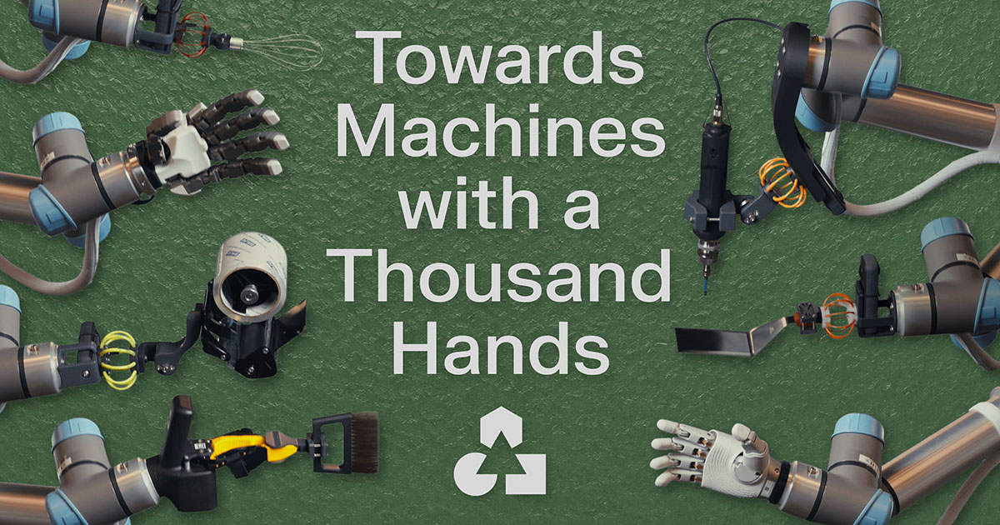
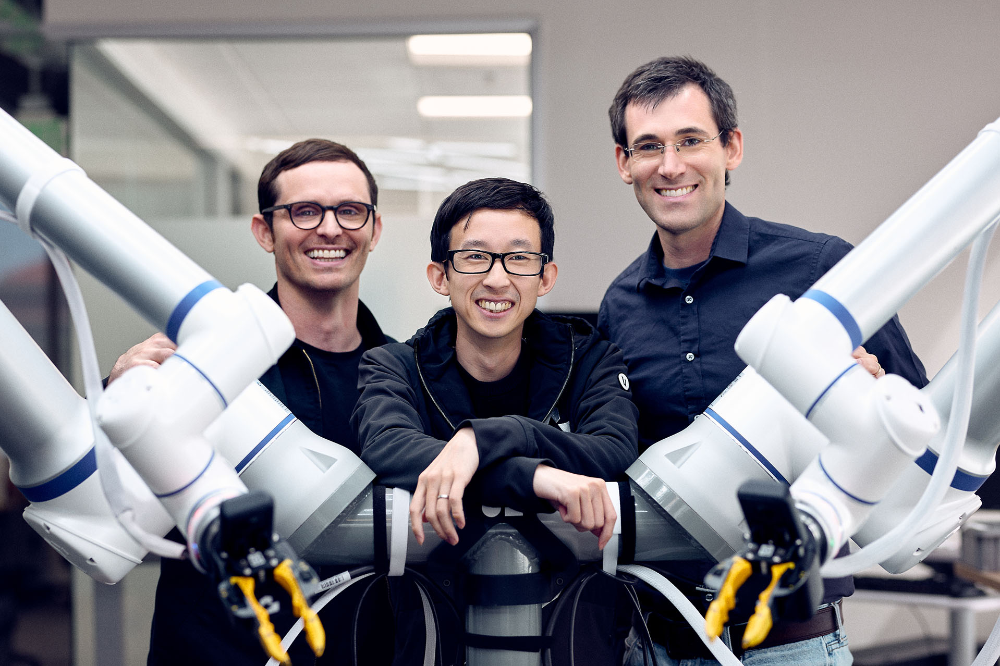
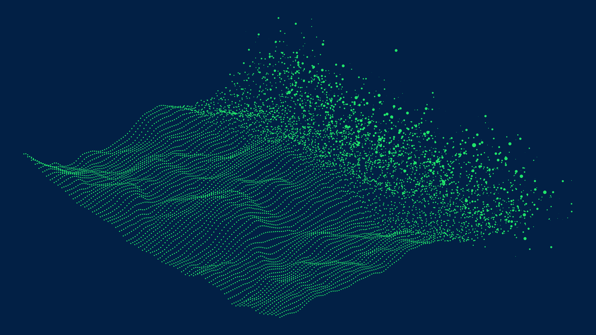
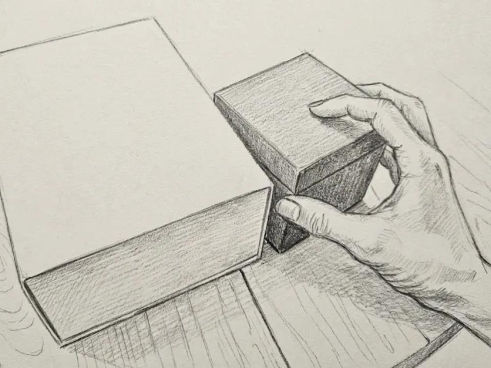
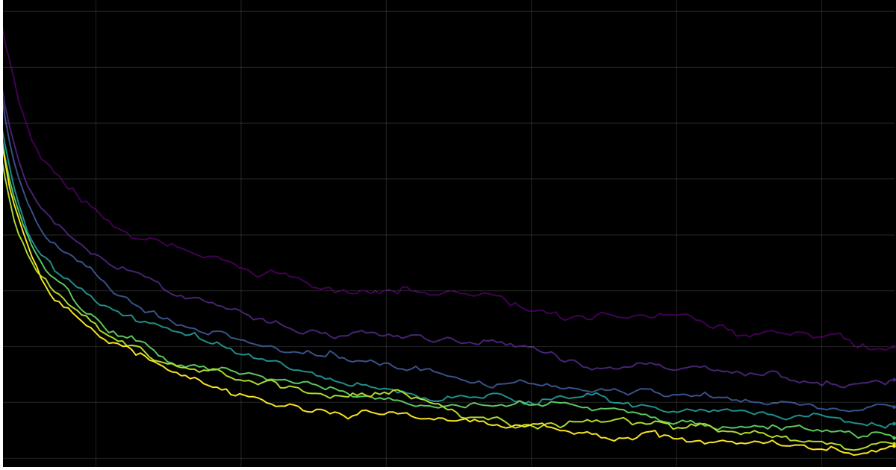

All Posts
GEN-1.5 / Embodied Foundation Models are One-Shot Learners
GEN-1.5 can in-context learn a new task from as little as 12 seconds of demonstration data — or adapt with 1 to 10 gradient steps on minutes of data. These capabilities emerge from pretraining on large-scale physical experience.
Towards Machines with a Thousand Hands
Robots aren't locked into the hands they're born with. GEN-1 now supports a broad range of end effectors, showing how a single model can transfer across radically different ways of interacting with the physical world.

Accelerating the Next Phase of Physical AI
Millions of robots are operating in the world today. Billions more are coming across factories, warehouses, laboratories, restaurants, farms, homes, and space. They will share one need: intelligence that can understand and act in the physical world.

Going Beyond World Models & VLAs
Goals are more powerful than methods. We share our perspective on why GEN-1 is trained from scratch — and what lies beyond VLAs and world models.

GEN-1 / Scaling Embodied Foundation Models to Mastery
We've created GEN-1, our latest milestone in scaling robot learning — the first general-purpose AI model that crosses a new performance threshold: mastery of simple physical tasks.
The Real Breakthrough Behind Our GTC Demo
We ran a live demo at GTC last week, but the real story is how quickly we got it running. GEN-0 has given us a step-change in the speed of generalization.
The Dark Matter of Robotics: Physical Commonsense
It's the reactive, closed-loop intelligence behind interacting in the physical world — an intuition of physics, compiled into reflex and muscle memory. What's been elusive in robotics may, for the first time, emerge from scaling.

GEN-0 / Embodied Foundation Models That Scale with Physical Interaction
We're introducing GEN-0, a new class of embodied foundation models built for multimodal training directly on high-fidelity raw physical interaction.

The Robots Build Now, Too
One-shot assembly is one of our new internal evaluation tasks: you build a small Lego structure, place it in front of the robot, and the robot builds copies of it.
Research Preview
A glimpse of what we're building at Generalist — end-to-end neural networks for dexterous sensorimotor policies across different embodiments, environments, and physical interactions.